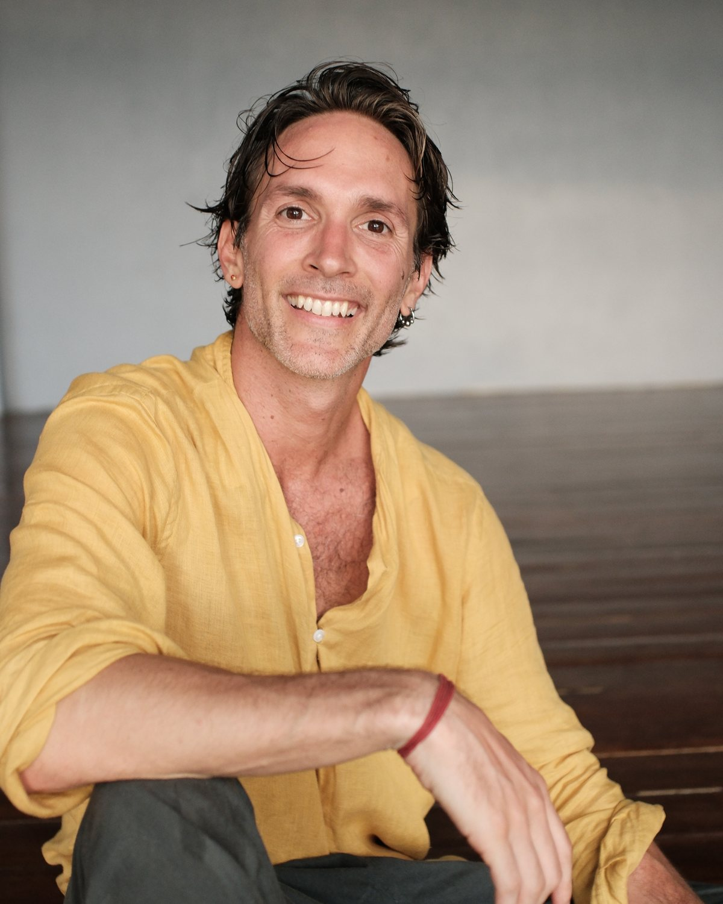

Welcome to the Wikipedia-design preview of ericalessi.com
Every page of the live site, rebuilt in the Wikipedia layout: serif titles with hairline rules, a sticky Contents box, infoboxes, wikitables, reference lists, blue links. The words are the live words. Scroll each page, then decide the direction.
Every page of the live site, rebuilt in the Wikipedia layout: serif titles with hairline rules, a sticky Contents box, infoboxes, wikitables, reference lists, blue links. The words are the live words. Scroll each page, then decide the direction.
The pages

Eric Alessi
Infobox with the portrait, CuriosiLab, the student quotes, the journal index, the library, the newsletter with its sample edition.
Infobox with the portrait, CuriosiLab, the student quotes, the journal index, the library, the newsletter with its sample edition.
01
The Floor Becomes the Ceiling
The article layout with a Contents box, an entry infobox, bracketed footnote marks and a References section.
The article layout with a Contents box, an entry infobox, bracketed footnote marks and a References section.
02
A Space of Nothing
Same template as entry 01, with the Dunn references.
Same template as entry 01, with the Dunn references.

The Contact Improvisation Canon
All nine shelves open on one long page with a sticky Contents box, free/paid marks on every entry, and the video shelf as a proper wikitable. The heaviest page, and the real test of the design.
All nine shelves open on one long page with a sticky Contents box, free/paid marks on every entry, and the video shelf as a proper wikitable. The heaviest page, and the real test of the design.
What changed
- Vector-2022 anatomy: sticky Contents on the left, one wide column, hairline rules under serif headings.
- Right-floated infobox on every article.
- Footnotes become
[1]marks and a References section. - Shelf 7 becomes a wikitable: film, what it is, where to watch, cost.
- Free and paid are small marks on each entry instead of a filter bar.
- No hero video, no brush strokes, no lime, no watercolor washes except the one infobox image.
What did not change
- Every sentence is the live sentence. Nothing was rewritten.
- Links stay Wikipedia blue, including visited.
- 14px system sans body, the type you already chose for the Canon.
- The newsletter button still goes to Kit.
Not rebuilt
- /join is a redirect to the Kit signup page, so there is nothing to lay out.
- /ig is a redirect to the homepage for the Instagram bio link.
- The hero film. A wiki page has no place for it; the poster appears as a thumbnail instead.
Open questions for you
- Whole site in this design, or Canon only and keep the ink-and-paper home?
- Serif headings (Wikipedia) or the sans headings you chose on 16 September?
- Keep the preview banner off; it exists only here.